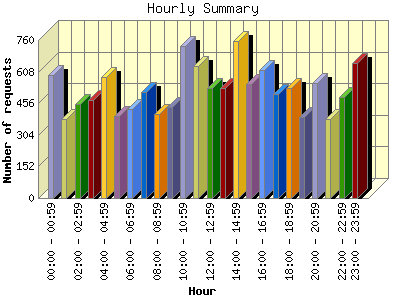
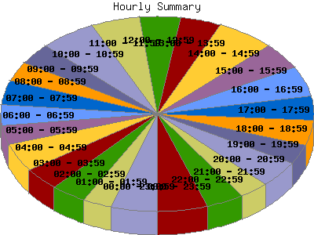

Report generated by Analog 6.0 and Report Magic 2.21
|
Web Server Statistics for "Harish Narayanan (hnarayan) - April 2006" Report generated by Analog 6.0 and Report Magic 2.21 |
The Hourly Summary identifies the level of activity broken down by each hour. Remember that one page hit can result in several server requests as the images for each page are loaded. This summary also compares the level of activity during working hours and after hours as a total for the report time frame.


| Hour | Number of requests | Number of bytes transferred | Percentage of the bytes | Percentage of the requests | |
|---|---|---|---|---|---|
| 1. | 00:00 - 00:59 | 592 | 33.093 MB | 6.83% | 4.74% |
| 2. | 01:00 - 01:59 | 379 | 13.879 MB | 2.87% | 3.03% |
| 3. | 02:00 - 02:59 | 450 | 13.932 MB | 2.88% | 3.60% |
| 4. | 03:00 - 03:59 | 473 | 26.997 MB | 5.57% | 3.79% |
| 5. | 04:00 - 04:59 | 583 | 18.115 MB | 3.74% | 4.67% |
| 6. | 05:00 - 05:59 | 394 | 11.061 MB | 2.28% | 3.15% |
| 7. | 06:00 - 06:59 | 428 | 12.807 MB | 2.64% | 3.43% |
| 8. | 07:00 - 07:59 | 512 | 11.468 MB | 2.37% | 4.10% |
| 9. | 08:00 - 08:59 | 403 | 17.711 MB | 3.66% | 3.23% |
| 10. | 09:00 - 09:59 | 439 | 13.374 MB | 2.76% | 3.52% |
| 11. | 10:00 - 10:59 | 733 | 32.010 MB | 6.61% | 5.87% |
| 12. | 11:00 - 11:59 | 635 | 21.517 MB | 4.44% | 5.08% |
| 13. | 12:00 - 12:59 | 528 | 20.860 MB | 4.31% | 4.23% |
| 14. | 13:00 - 13:59 | 531 | 16.641 MB | 3.44% | 4.25% |
| 15. | 14:00 - 14:59 | 757 | 24.522 MB | 5.06% | 6.06% |
| 16. | 15:00 - 15:59 | 550 | 23.799 MB | 4.91% | 4.40% |
| 17. | 16:00 - 16:59 | 614 | 25.023 MB | 5.17% | 4.92% |
| 18. | 17:00 - 17:59 | 501 | 31.363 MB | 6.47% | 4.01% |
| 19. | 18:00 - 18:59 | 527 | 19.034 MB | 3.93% | 4.22% |
| 20. | 19:00 - 19:59 | 389 | 13.471 MB | 2.78% | 3.11% |
| 21. | 20:00 - 20:59 | 553 | 15.313 MB | 3.16% | 4.43% |
| 22. | 21:00 - 21:59 | 382 | 23.985 MB | 4.95% | 3.06% |
| 23. | 22:00 - 22:59 | 488 | 25.720 MB | 5.31% | 3.91% |
| 24. | 23:00 - 23:59 | 649 | 18.647 MB | 3.85% | 5.20% |
| Work Hours (8:00am-4:59pm) | 5,190 | 195.458 MB | 40.36% | 41.55% | |
| After Hours (5:00pm-7:59am) | 7,300 | 288.886 MB | 59.64% | 58.45% | |
This report was generated on July 25, 2006 14:40.
Report time frame April 1, 2006 00:16 to April 30, 2006 23:59.
| Web statistics report produced by: | |
 Analog 6.0 Analog 6.0 |  Report Magic 2.21 Report Magic 2.21 |